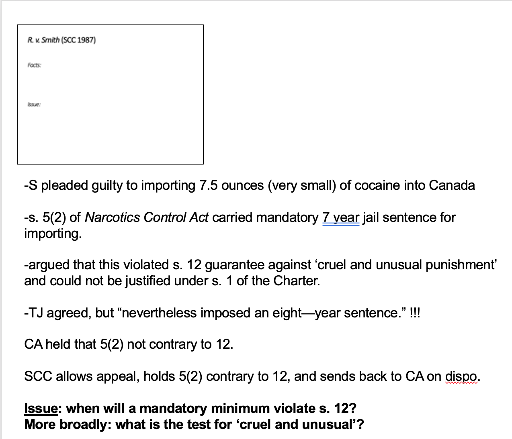
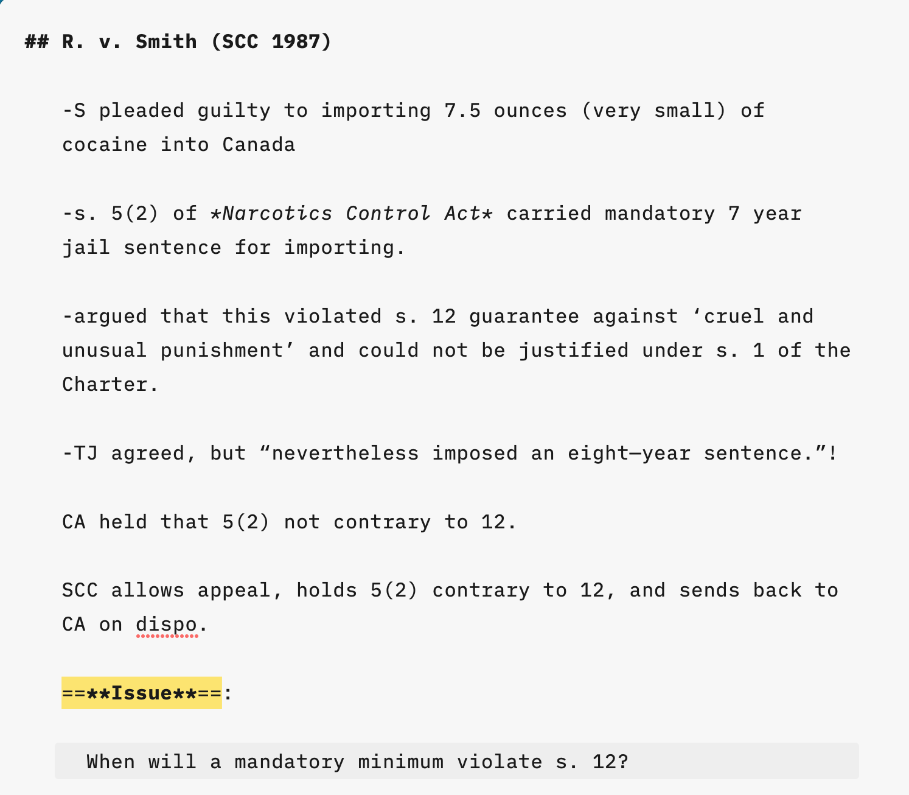
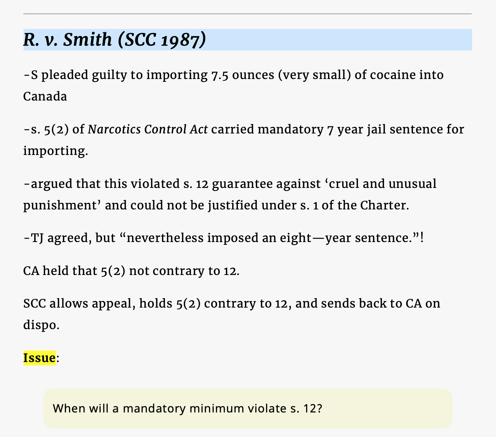

Creating lecture notes in markdown and formatting with CSS
For many years, I kept my lecture notes in my PowerPoint slides, in the notes field, so as to take advantage of a nice feature in PowerPoint: the ability to produce a printed copy with slides and their notes on a single page, like so:

There were a few benefits. Everything was in one place. Every note was tied to its slide. And you could format the note, WISIWIG style, using PowerPoint on a Mac or PC.
But there were drawbacks. I wanted to keep my notes easy to read, so I avoided writing notes longer than the spacing below the slide on that single page. (If you do, you get another page containing only the rest of the note, which I feared — irrationally — would caused confusion as I worked through my notes in the lecture.)
The main limitation, though, was formatting. The notes were crammed together and small. No colour. Limited use of spacing, and so on.
Then came markdown
I started using markdown a few years before deciding I would use it for lecture notes. The merits of markdown in law and teaching are best saved for another post. Suffice it to say here that using markdown frees you from the tyranny of Microsoft Word or Pages, or creating content that remains tethered to one app.
Covid and the forced move to lecturing on Zoom were ideal conditions for experimenting with markdown. One by one, I began moving my notes out of PowerPoint into markdown, and I wrote my notes for a new course I began teaching, the Law of Evidence, in markdown from the start. In lectures, I would have the PowerPoint slide on one side of the screen, the Zoom gallery on a strip at the top, and a window with my notes in markdown in the middle. It worked well.
The benefits of speaking from notes in markdown instead of using PowerPoint
I use iA Writer as my markdown app, but any of several others would do just as well (say, Drafts). The main benefits are that notes are cleaner, better formatted, better organized, and easier to read. There are no concerns about squeezing content into a certain space, or hassles fiddling with the formatting limitations in PowerPoint.
It also liberates me from needing to work in PowerPoint on the Mac or a PC to create notes. I can use the iPad, and I can easily pop in and out of my notes on whatever device I happen to be using (my phone) to tweak a note if a thought comes to mind.
Taking it to the next level
But I didn’t discover the most valuable thing about this workflow until this weekend: the ability to format all of my notes by creating a single style template, using external fonts and CSS (Cascading Style Sheets).
This brings a mind-blowing amount of choice and control over every aspect of formatting: fonts, colours, backgrounds, borders, headings, indented quotes, line spacing, even letter spacing. And tweaking one template instantly changes the way my notes appear for every single class, for all of the courses I teach. That’s a huge amount editing in one click.
I came to this with a tenuous grasp of html and no knowledge of CSS. (I knew about the possibility of creating your own CSS templates in iA Writer for years but didn’t have the courage to tackle it until now.) A friend pointed me to a great set of html and CSS tutorials over at w3schools.com, which I’m still making my way through. But having only read a brief overview of CSS, I was able to create my own template with my own fonts and tweak all sorts of things, including letter spacing (making it easier to read standing at the lectern).
Here’s the difference. I spent much of this year reading from the raw markdown version of my notes, which looks like this:

But with a single click, I can switch into ‘preview’ mode and see my notes with my CSS template and fonts applied:

I will continue to tweak this template, and likely create at least a few others (with different fonts). But I’m struck by how easy it was to do and how much of a difference it makes visually. (I’m using the Google fonts ‘Merriweather’ here for the headings and body and ‘Noto Sans’ for the indented/shaded part.)
A better option than Notion
Before venturing my CSS experiment with iA Writer, I thought about using Notion for this purpose. That is, I thought of pouring my markdown notes into Notion and using its formatting features to make my notes look a bit nicer than the raw-looking markdown page you see above. But I’m glad I tried creating a template in iA Writer first. It’s clearly the better way to do this.
Using Notion would have meant formatting every single heading, paragraph, bullet, quote, etc., one by one.
Why not html?
Can you go right from markdown to html and format your notes using a stylesheet — instead of using iA Writer? I tried that and yes you can. But it’s more cumbersome. You would first have to export your markdown as html (unless you want to compose your notes in html, which wouldn’t be efficient) and save it as a new file. And then you would need to open that file in a browser. Three steps — and every time you tweaked your notes, you’d have to do it again.
The advantage of using iA Writer for this is that with the click of a button, it takes you from your raw markdown to an html preview window — and vice versa, giving you access to the master file for constant updating.
The browser-like preview window in iA Writer has one annoying limitation: you can’t re-size the fonts with the click of a button as you would in Safari or Chrome. So, as far as I know, you need to get your font-size right in the template.1
Despite this one limitation, it’s a great workflow and a vast improvement in the format of my notes from my days as a prisoner of PowerPoint.
-
I’m indebted to a friend for pointing out that to tweak font-size for an individual note, you can include a style tag at the head of that note in the markdown:
<style>body{font-size: 2em;}</style>↩︎